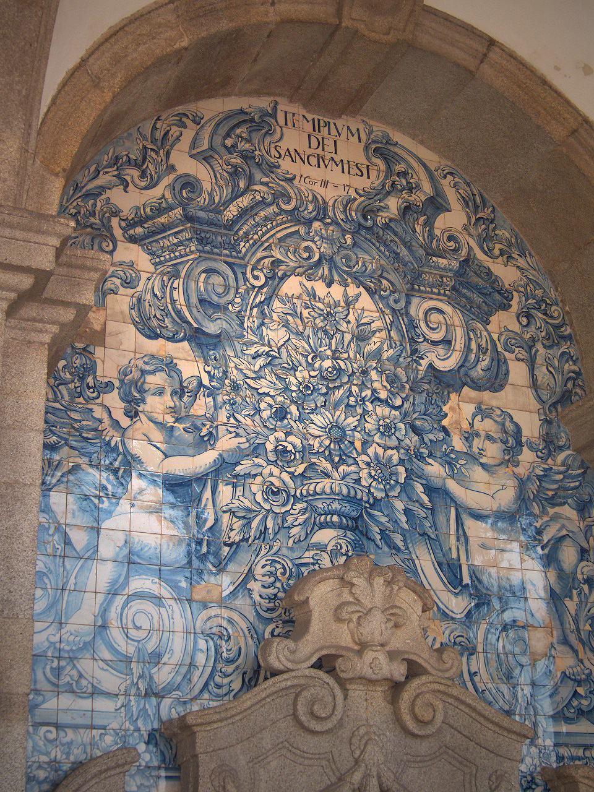

ICPC World Finals 2019 · Problem A

Ceramic artists Maria and João are opening a small azulejo store in Porto. Azulejos are the beautiful ceramic tiles for which Portugal is famous. Maria and João want to create an attractive window display, but, due to limited space in their shop, they must arrange their tile samples in two rows on a single shelf. Each of João’s tiles has exactly one of Maria’s tiles in front of it and each of Maria’s tiles has exactly one of João’s tiles behind it. These hand-crafted tiles are of many different sizes, and it is important that each tile in the back row is taller than the tile in front of it so that both are visible to passers-by. For the convenience of shoppers, tiles in each row are arranged in non-decreasing order of price from left to right. Tiles of the same price may be arranged in any order subject to the visibility condition stated above.
Your task is to find an ordering of the tiles in each row that satisfies these constraints, or determine that no such ordering exists.
The first line of input contains an integer n (1 ≤ n ≤ 5·105), the number of tiles in each row. The next four lines contain n integers each; the first pair of lines represents the back row of tiles and the second pair of lines represents the front row. Tiles in each row are numbered from 1 to n according to their ordering in the input. The first line in each pair contains n integers p1, …, pn (1 ≤ pi ≤ 109 for each i), where pi is the price of tile number i in that row. The second line in each pair contains n integers h1, …, hn (1 ≤ hi ≤ 109 for each i), where hi is the height of tile number i in that row.
If there is a valid ordering, output it as two lines of n integers, each consisting of a permutation of the tile numbers from 1 to n. The first line represents the ordering of the tiles in the back row and the second represents the ordering of the tiles in the front row. If more than one pair of permutations satisfies the constraints, any such pair will be accepted. If no ordering exists, output impossible.
4 3 2 1 2 2 3 4 3 2 1 2 1 2 2 1 3
3 2 4 1 4 2 1 3
2 1 2 2 3 2 8 2 1
impossible